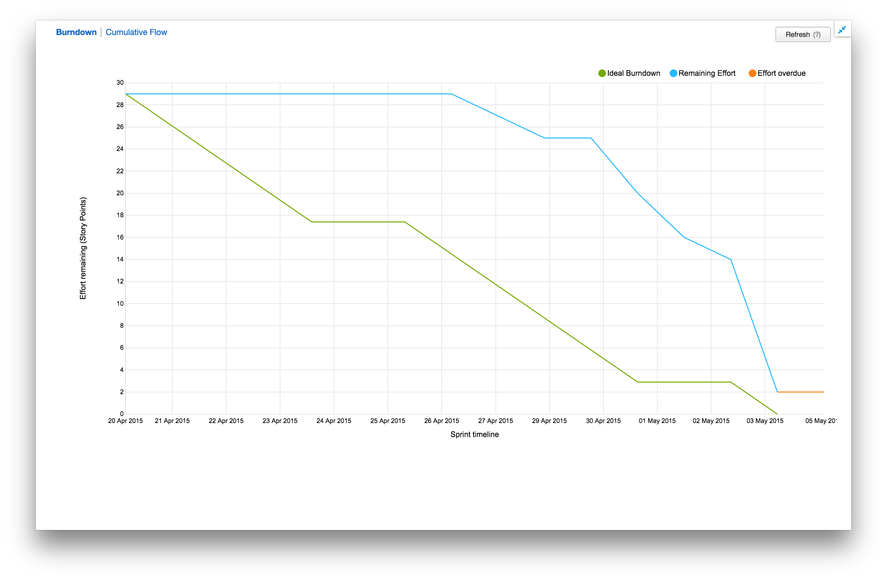

April 20th - May 4th Report
Overview
During this sprint, the team finished up contacting sponsors as we turned our focus to creating our project selection presentation. In addition, much time was spent dicussing and clarifying opinions on project rankings.
Retrospective

The skeleton of this sprint was planned after the first round of sponsor presentations, and as such included tasks to follow up with several sponsors. However, the vast majority of the work done revolved around creating components for our presentation. We spent a great deal of time discussing, iterating on, and improving our slides and talking points.
There were quite a few tasks discovered mid-sprint, and thus our story point total increased dramatically as we added crucial tickets to the board. All total, the team completed
43 story points, with none rolling over. The inflation of tickets is especially apparent in the above burndown chart, where it is noted that the sprint began with only 29 points committed.
Unfinished Tickets